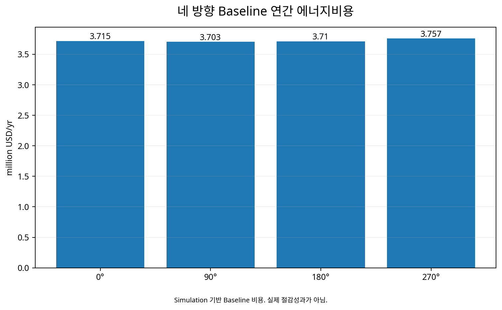

ASHRAE 90.1 Appendix G Baseline과 설계안을 비교한
대형 복합건물 LEED 에너지모델링
72층 대형 복합건물을 대상으로 eQUEST3-64와 ASHRAE 90.1-2004 Appendix G Performance Rating Method를 적용하여 Proposed Design과 규정 Baseline의 연간 에너지비용·End-use·Peak Demand를 비교하고 LEED EAc1 성능을 평가한 실제 에너지모델링 사례.
LEED EAc1ASHRAE 90.1-2004Appendix GeQUESTBaselineProposed Design1. 왜 LEED와 Energy Modeling이 필요했는가?
대형 신축건물의 친환경성을 설명하려면 단열재를 더 사용했다거나 고효율 설비를 채택했다는 항목 나열만으로는 부족하다. 건축·조명·공조·열원·운영조건이 결합된 결과를 하나의 Building Model에서 계산하고, 공통된 기준건물과 비교해야 설계안의 상대적 성능을 정량적으로 설명할 수 있다.
LEED의 Energy & Atmosphere 영역에서 Energy Modeling이 중요한 이유도 여기에 있다. 설계안의 에너지성능을 자의적인 기존건물과 비교하는 것이 아니라, ASHRAE 90.1 Appendix G에 따라 구성한 Baseline과 비교함으로써 설계팀이 선택한 외피·조명·HVAC·열원과 제어전략이 기준 대비 어느 정도의 성능차이를 만드는지 평가한다.
특히 초고층 복합건물처럼 Office, Hotel, 상업·지원시설의 Schedule과 HVAC가 서로 다른 프로젝트에서는 단위면적당 연간 사용량 하나만으로 설계성능을 설명하기 어렵다. 시간별 Simulation은 용도별 부하와 End-use, Peak Demand, 에너지원과 비용을 함께 추적할 수 있다는 점에서 설계 의사결정과 인증을 연결하는 도구가 된다.
5. LEED는 무엇을 평가하는가 — 에너지만 보는 인증은 아니다
LEED(Leadership in Energy and Environmental Design)는 건물의 에너지성능뿐 아니라 부지, 물, 자재, 실내환경과 운영을 함께 다루는 종합적인 Green Building Framework다. CASE51 당시 적용된 LEED 체계에서도 Energy & Atmosphere는 중요한 영역이었고, EAc1 Optimize Energy Performance는 Baseline 대비 Proposed Design의 에너지성능을 Simulation으로 평가하는 핵심 Credit이었다.
따라서 CASE51의 4%라는 결과는 ‘LEED 전체 점수’가 아니다. 여러 LEED 평가영역 가운데 Energy Performance를 설명하기 위한 모델링 결과다. 이 구분은 인증제도를 공부하는 건축설계전문가에게 중요하다.
6. LEED 인증의 최근 흐름 — ‘설계효율’에서 ‘탄소·운영성과·회복탄력성’까지
CASE51은 2014년 ASHRAE 90.1-2004 기반의 프로젝트지만, LEED 자체는 이후 계속 진화했다. 2025년에 공개된 LEED v5는 Decarbonization, Quality of Life, Ecological Conservation & Restoration을 핵심 Impact Area로 전면에 두고 있으며, 설계·시공에서 운영·유지관리까지 Performance Indicator와 Data를 연계하는 방향을 강화했다.
특히 LEED v5에서는 Platinum 수준에 Energy Efficiency, Carbon Emissions, Renewable Energy와 관련한 강화된 요구가 포함되었다. 이는 친환경건축의 관심이 단순한 연간 에너지비용 절감에서 Operational Carbon, Embodied Carbon, Electrification, Renewable Energy와 실제 운영 Performance까지 넓어지고 있음을 보여준다.
시장 측면에서도 LEED는 오피스에만 머물지 않는다. 2025년 미국의 LEED 동향에서는 기존의 Office와 Higher Education뿐 아니라 Life Sciences, Data Centers, Advanced Manufacturing이 성장 분야로 언급되었다. 한국도 2025년 미국 외 LEED 인증시장 순위에서 인증면적 기준 4위, 100개 프로젝트·약 3.88백만㎡로 집계되었으며 Office와 Warehouse가 주요 적용 분야로 보고되었다.
당시의 Appendix G Baseline Modeling은 과거의 인증기법으로 끝난 것이 아니다. 오늘날에도 ‘기준 성능을 정의하고 설계안의 효과를 정량화하며, 그 결과를 탄소와 운영성과까지 연결한다’는 사고방식은 친환경건축 성능평가의 핵심이다.
7. LEED Energy Modeling은 ‘설계 전후 사용량’을 단순 비교하는 작업이 아니다
LEED EAc1의 Performance Rating Method에서 비교대상은 실제 건물을 개선하기 전·후의 계량값이 아니다. 설계자가 제안한 Proposed Design과 ASHRAE 90.1의 규칙에 따라 별도로 만들어진 Baseline Building을 동일한 기상·용도·운영조건 아래에서 Simulation하여 성능차이를 평가한다.
따라서 Baseline은 임의로 만든 ‘평균적인 건물’이 아니다. 외피, HVAC 시스템 종류와 효율, Fan power, 창면적 등 여러 항목을 Appendix G의 규칙에 따라 다시 정의해야 한다. 이 규칙을 잘못 적용하면 Proposed가 아무리 정교해도 비교 자체가 성립하지 않는다.
5. 실제 대상은 Office와 Hotel이 결합된 72층 복합건물이었다
대상 건물은 72층 규모로, 고층 Office 33개 층과 Hotel Guest Room 27개 층, Fitness·Spa·Banquet 등의 호텔시설 4개 층, Observation Platform 2개 층, 기계실 2개 층과 지하 3개 층의 주차·지원공간으로 구성되었다.
공조공간 약 1,192,722 ft², 비공조공간 약 401,538 ft²였다. Office는 주 5일 07~20시, Hotel은 주 7일 24시간 운영하는 조건으로 모델링하였다. 서로 다른 용도와 Schedule을 하나의 평균값으로 처리하지 않고 공간별로 구분하는 것이 중요했다.
6. eQUEST 모델에는 건축·설비·운영조건을 함께 넣었다
Proposed Model은 eQUEST3-64를 이용하여 작성했고, 인천 TRY 시간별 기상자료를 사용하였다. Modeling에는 외피, 내부부하, HVAC, Process Energy, 외부조명, 주차장 Fan, Elevator, 에너지요금과 재실·운영 Schedule 등이 포함되었다.
모델을 만든 뒤 Verification Report를 확인해 입력자료와 모델이 일치하는지 점검하고, 불일치가 있으면 입력을 수정한 뒤 연간 Simulation을 수행했다. ES-D는 전기·가스·열의 경제성 요약, PS-E와 BEPS는 End-use와 건물성능, PS-B는 Peak Demand, PS-D는 Plant가 부하를 만족하는지를 확인하는 데 사용했다.
7. Baseline은 왜 건물을 네 방향으로 돌려 계산했는가?
Baseline Model은 실제 건물방향 0°뿐 아니라 90°, 180°, 270°로 회전하여 각각 Simulation한 뒤 네 결과의 연간 에너지비용 평균을 Baseline Performance로 사용하였다. 각 방향에서 창의 SHGC도 해당 방향의 ASHRAE 최소 요구조건을 반영하였다.
이 절차는 특정 Orientation의 우연한 유·불리를 Baseline에서 평준화하고 설계 자체의 성능차이를 비교하기 위한 것이다.
8. Baseline의 창면적과 HVAC도 규정에 따라 다시 정의했다
Baseline Glazing은 네 방향에 균등하게 재배치하고 WWR를 40%로 모델링하였다. 외피 Construction은 Climate Zone 4A에 해당하는 ASHRAE 90.1-2004의 최소요구조건을 반영했다.
Office 층 Baseline HVAC는 VAV with Hot Water Reheat, System Type 7, Hotel 층은 Packaged Terminal Heat Pump, System Type 2로 모델링했다. Fan power와 설비효율 역시 Standard의 규정값과 Sizing Run을 이용해 결정하였다.
Baseline은 Proposed의 설비를 ‘조금 나쁘게’ 만든 모델이 아니다. 건물용도·규모·열원 등에 따라 Appendix G가 요구하는 시스템으로 별도로 구성한다.
9. 성능평가는 연간 에너지비용을 기준으로 했다
(Baseline Building Performance − Proposed Building Performance) / Baseline Building Performance × 100
네 방향 Baseline의 연간 비용은 각각 약 3.715, 3.703, 3.710, 3.757 million USD/yr였고 평균 Baseline Building Performance는 약 3.721 million USD/yr였다. 전기, Natural Gas와 Purchased Heat가 포함된다.
여기서 중요한 것은 ‘에너지량을 몇 % 줄였는가’와 ‘에너지비용을 몇 % 줄였는가’가 같지 않을 수 있다는 점이다.
10. 결과 — Proposed는 Baseline보다 약 4% 낮은 에너지비용으로 평가되었다
최종 모델에서는 As-designed Proposed Building의 연간 에너지비용이 ASHRAE 90.1-2004 Baseline보다 약 4% 낮은 것으로 평가되었다.
그런데 Proposed의 연간 Site Energy Consumption은 Baseline보다 약 36% 더 큰 것으로 계산되었다. Proposed가 냉방에 Purchased Heat를 사용하는 흡수식 냉동기를 적극 사용했고 당시 비용구조에서 전력 Peak와 전력비용을 낮추는 효과가 있었기 때문이다.
11. ‘에너지량은 증가했는데 비용은 감소’ — 왜 이런 결과가 나왔는가?
Proposed 흡수식 냉동기 COP는 약 0.73, Baseline 전기식 원심냉동기 COP는 약 6.1이었다. 단순 Site Energy 양만 보면 Proposed 냉방에너지가 크게 나타날 수 있지만 Purchased Heat를 이용함으로써 전기 Peak Demand와 전력비용을 줄이는 효과가 발생하였다.
Site Energy, Source Energy, Energy Cost, Peak Demand, Carbon은 서로 다른 평가축이다. 어떤 지표를 기준으로 평가하느냐에 따라 설계대안의 의미가 달라질 수 있다.
“에너지비용 4% 개선”을 “에너지사용량 4% 절감”으로 바꾸어 표현하면 안 된다. 이 모델에서는 Site Energy가 증가했다. 성과지표의 정의와 Boundary를 함께 읽어야 한다.
12. 어떤 설계요소가 Proposed의 비용성능을 개선했는가?
주요 요인은 Purchased Heat를 이용한 전기 Peak Demand 감소, 우수한 AHU Fan 효율, 난방기에 유리한 외피성능과 낮은 Lighting Power Density였다.
| End-use | Proposed | Baseline | 변화 |
|---|---|---|---|
| Interior Lighting | 2,780,571 kWh/yr | 4,638,876 kWh/yr | -40.1% |
| Space Heating | 14,338.5 MBtu/yr | 17,725.2 MBtu/yr | -19.1% |
| Interior Fans | 3,071,473 kWh/yr | 3,265,508 kWh/yr | -5.9% |
| Cooling Electricity | 119,837 kWh/yr | 2,285,515 kWh/yr | -94.8% |
Office LPD는 Proposed 약 0.6 W/ft², Baseline 1.1 W/ft², Hotel은 Proposed 약 0.45 W/ft², Baseline 1.1 W/ft²였다.
13. 모든 End-use가 좋아진 것은 아니다
Proposed에서는 Pump Energy가 Baseline보다 약 103% 증가했고 Heat Rejection Energy도 약 76% 증가했다. 반면 Fan, Lighting, Heating 등은 개선되었다.
전체 4% 비용개선은 모든 설비가 4%씩 좋아진 결과가 아니다. 어떤 End-use에서는 절감하고 다른 End-use에서는 증가한 결과가 연간 비용 수준에서 합쳐진 것이다. 이 End-use Balance를 보는 것이 다음 개선대상을 찾는 방법이다.
14. Process Energy를 왜 따로 확인했는가?
Baseline Building Performance에서 Process Energy Cost 비중은 약 25.27%로 계산되었다. LEED EAc1에서는 규제부하와 Process Load의 처리방법이 성능비교에 영향을 주기 때문에 Process Energy가 지나치게 작게 모델링되지 않았는지 확인하는 절차가 중요하다.
Plug Load처럼 Proposed와 Baseline에서 동일하게 유지되는 부하는 건축·설비 효율개선으로 쉽게 줄어들지 않는다. Process Load 비중이 커질수록 전체 Building Performance Improvement가 희석되는 효과도 이해할 필요가 있다.
15. 건축설계전문가에게 이 사례가 주는 의미
LEED Modeling은 인증 마지막 단계에서 점수를 계산하기 위한 작업만으로 사용하기보다 설계과정에서 Baseline과 Proposed의 차이를 분해하는 도구로 활용할 가치가 있다. 외피, 창호, Lighting Power, HVAC System, Fan, Plant와 에너지원 선택이 End-use와 Peak Demand에 어떤 영향을 주는지 같은 모델에서 비교할 수 있기 때문이다.
복합건물에서는 Office와 Hotel의 Schedule과 Baseline HVAC Type도 서로 다르다. 단일 EUI보다 공간용도 → Baseline System → End-use → Energy Source → Cost의 연결을 이해해야 설계대안의 효과를 제대로 읽을 수 있다.
데이터와 분석 시각화

16. Evidence & Measurement Boundary
본 사례의 약 4% 성능개선은 준공 후 실측된 에너지절감률이 아니라, eQUEST3-64와 ASHRAE 90.1-2004 Appendix G Performance Rating Method에 따라 구축한 Proposed Design과 Baseline Building의 연간 에너지비용을 비교한 Simulation 결과이다.
특히 Proposed Design의 연간 Site Energy Consumption은 Baseline보다 약 36% 크게 계산되었음에도, Purchased Heat 활용에 따른 전력 Peak Demand 저감과 에너지원별 비용구조, 조명·외피·Fan 등의 성능차이가 반영되면서 연간 에너지비용은 Baseline 대비 약 4% 낮게 평가되었다. 따라서 “에너지비용 4% 개선”을 “에너지사용량 4% 절감”으로 해석해서는 안 된다.
또한 본 사례에 적용된 ASHRAE 90.1-2004 및 당시 LEED EAc1 기준은 프로젝트 수행 당시의 평가기준이다. 현재 LEED 프로젝트에 동일한 Baseline 조건, 배점 또는 세부규칙을 그대로 적용하는 것이 아니라, 해당 프로젝트가 적용받는 LEED 버전과 ASHRAE 기준을 별도로 확인해야 한다.
17. Review 상태
Status: USER-REVIEW / NOT FINAL-LOCK